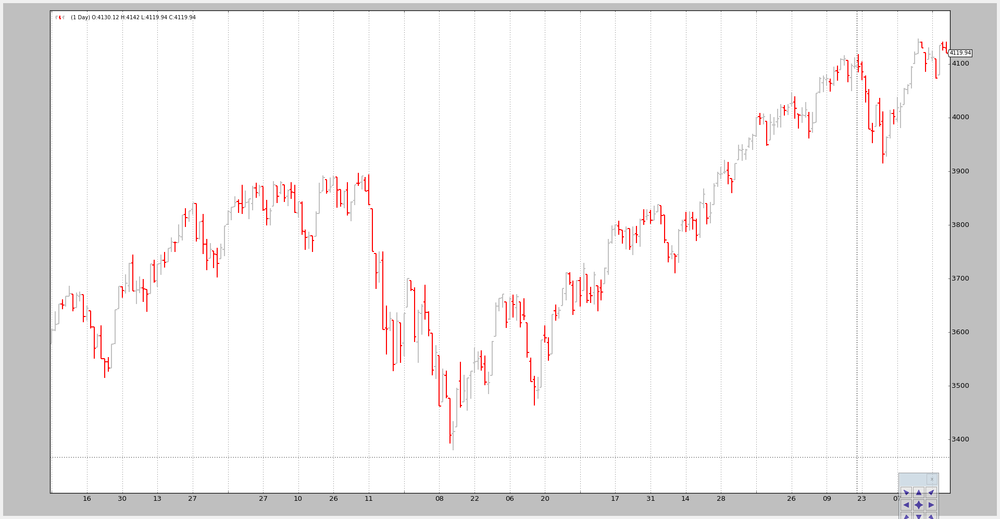
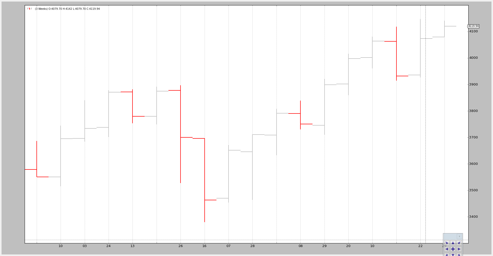

Data Resampling¶
When data is only available in a single timeframe and the analysis has to be done for a different timeframe, it’s time to do some resampling.
“Resampling” should actually be called “Upsampling” given that one goes from a source timeframe to a larger time frame (for example: days to weeks)
“Downsampling” is not yet possible.
backtrader has built-in support for resampling by passing the original data
through a filter object which has intelligently been named: DataResampler.
The class has two functionalities:
- Change the timeframe
- Compress bars
To do so the DataResampler uses standard feed.DataBase parameters during
construction:
timeframe(default: bt.TimeFrame.Days)Destination timeframe which to be useful has to be equal or larger than the source
compression(default: 1)Compress the selected value “n” to 1 bar
Let’s see an example from Daily to weekly with a handcrafted script:
$ ./data-resampling.py --timeframe weekly --compression 1
The output:

We can compare it to the original daily data:
$ ./data-resampling.py --timeframe daily --compression 1
The output:
The magic is done by executing the following steps:
- Loading the data as usual
- Feeding the data into a
DataResamplerwith the desired
- timeframe
- compression
The code in the sample (the entire script at the bottom).
# Load the Data
datapath = args.dataname or '../datas/sample/2006-day-001.txt'
data = btfeeds.BacktraderCSVData(
dataname=datapath)
# Handy dictionary for the argument timeframe conversion
tframes = dict(
daily=bt.TimeFrame.Days,
weekly=bt.TimeFrame.Weeks,
monthly=bt.TimeFrame.Months)
# Resample the data
data_resampled = bt.DataResampler(
dataname=data,
timeframe=tframes[args.timeframe],
compression=args.compression)
# Add the resample data instead of the original
cerebro.adddata(data_resampled)
A last example in which we first change the time frame from daily to weekly and then apply a 3 to 1 compression:
$ ./data-resampling.py --timeframe weekly --compression 3
The output:
From the original 256 daily bars we end up with 18 3-week bars. The breakdown:
- 52 weeks
- 52 / 3 = 17.33 and therefore 18 bars
It doesn’t take much more. Of course intraday data can also be resampled.
The sample code for the resampling test script.
from __future__ import (absolute_import, division, print_function,
unicode_literals)
import argparse
import backtrader as bt
import backtrader.feeds as btfeeds
def runstrat():
args = parse_args()
# Create a cerebro entity
cerebro = bt.Cerebro(stdstats=False)
# Add a strategy
cerebro.addstrategy(bt.Strategy)
# Load the Data
datapath = args.dataname or '../datas/sample/2006-day-001.txt'
data = btfeeds.BacktraderCSVData(
dataname=datapath)
# Handy dictionary for the argument timeframe conversion
tframes = dict(
daily=bt.TimeFrame.Days,
weekly=bt.TimeFrame.Weeks,
monthly=bt.TimeFrame.Months)
# Resample the data
data_resampled = bt.DataResampler(
dataname=data,
timeframe=tframes[args.timeframe],
compression=args.compression)
# Add the resample data instead of the original
cerebro.adddata(data_resampled)
# Run over everything
cerebro.run()
# Plot the result
cerebro.plot(style='bar')
def parse_args():
parser = argparse.ArgumentParser(
description='Pandas test script')
parser.add_argument('--dataname', default='', required=False,
help='File Data to Load')
parser.add_argument('--timeframe', default='weekly', required=False,
choices=['daily', 'weekly', 'monhtly'],
help='Timeframe to resample to')
parser.add_argument('--compression', default=1, required=False, type=int,
help='Compress n bars into 1')
return parser.parse_args()
if __name__ == '__main__':
runstrat()


{kind=link}
{kind=link}